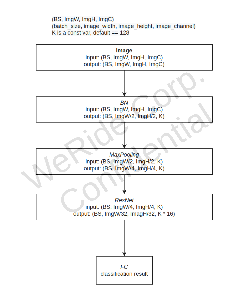

95_WR MS4 ODD
1. Module task
Purpose
The ODD module is not determined whether the vehicle is driving in a dangerous environment
scope
Autonomous driving modules (plural) depend on different conditions.Only when all conditions are full, can the entire autonomous driving system run normally
The judgment of Image ODD coverage includes:
weather
Camera quality
Road scene
Road type
Road material
Light condition
Road obstacle
Brightness
3. Module composition
2. Model input
-
Unclear explanation of the input camera type
3. Dataset
test_data: 43767
There is a real value of 5000, and there is no real value for the remaining
train_data: 4959
4. Model Design && DAG
Backbone:
- 
head: DLAClassifyHead
21 major category, 63 small category
normal_weather
2
rainy
3
snowy
3
foggy_sandstorm
3
have_lighting
5
face_sun_light
3
face_car_light
3
water_on_ground
3
snow_on_ground
2
overexposure
3
dark
3
occlusion
2
fog_rain_drop_blurry
2
moving_blurry
2
other_blurry
2
road_type
6
water_splash
3
construction_area
3
traffic_light_blurry
3
obstcal_blurry
3
pavement_material
4
4.
5. Different places from MS3
Readme is listed in the current code.